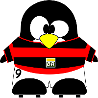
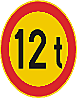
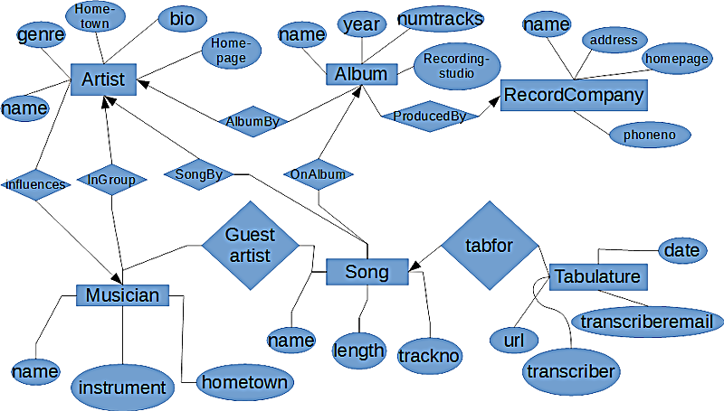

Asiakirjamalli (engl. Template) tarkoittaa valmista asiakirjapohjaa, josta löytyvät kaikki tarvittavat asetukset uudelle asiakirjalle. Asiakirjamallin sisään voidaan määritellä sivun asetukset ja tyylit, joita halutaan käyttää asiakirjamallin pohjalta rakennettavissa dokumenteissa. Esimerkiksi Microsoft Wordissa perusasiakirjamallina toimii Normal.dot niminen asiakirjamallitiedosto, joka sisältää monien käyttämät tyylimäärittelyt sekä sivun asetukset. Tekstinkäsittelyohjelmissa on olemassa valmiina muitakin asiakirjamalleja, jotka on laadittu yleisimpiin tarpeisiin. Usein joudutaan myös muutamaan asiakirjamallia tai tekemään se kokonaan itse, koska valmiit asiakirjamallit eivät sisällä riittäviä ominaisuuksia.
Kerran tehtyä asiakirjamallia voidaan käyttää yhä uudelleen ja uudelleen, jolloin kerran hyväksi havaittuja asiakirjan ominaisuuksia ei tarvitse enää määritellä uudestaan. Asiakirjamalli on hyvä paikka säilöä myös itse tehdyt tyylit. Tällöin kerran hyvin tehdyt tyylimäärittelyt ovat käytettävissä aina uutta asiakirjaa luotaessa, joten niitä ei tarvitse määritellä uudelleen. Asiakirjamalliin voidaan määritellä tyylien lisäksi muutamia asiakirjan yleisiä ominaisuuksia, kuten esimerkiksi sivunumerointi, sivun marginaalit ja tietysti toistuvasti asiakirjaan kirjoitettavia tekstiosia. Seuraavissa luvuissa käsitellään asiakirjan ominaisuuksia, jotka voidaan sisällyttää osaksi asiakirjamallia, mutta joita voidaan käyttää myös yksittäisissä asiakirjoissa.
Asiakirjamallin laatimiseen on kaksi tapaa. Asiakirjamalli voidaan tehdä tyhjästä tai sen pohjana voidaan käyttää olemassa olevaa asiakirjaa. Asiakirjan kirjoittamisen aikana huomataan usein erilaiset asiakirjan asettamat vaatimukset. Tällöin ensimmäinen asiakirja voi toimia tulevien asiakirjojen pohjana. Helpoin tapa asiakirjamallin laatimiseen on tallentaa asiakirja asiakirjamalliksi. Esimerkiksi Microsoft Wordissa asiakirjamalliksi tallennettaessa asiakirjasta tulee DOT-päätteinen tiedosto, jota voidaan käyttää uusien asiakirjojen pohjana. Tallennettaessa kannattaa tarkistaa, että asiakirjamalli tallennetaan muiden asiakirjamallien joukkoon oikeaan hakemistoon.

Asiakirjamalli voidaan tehdä myös uutena asiakirjana. Tällöin asiakirjamallin tekeminen aloitetaan, kuten uuden asiakirjan tekeminen, valikkokomennolla File|New. Näkyviin avautuneen ikkunan oikeasta alareunassa olevasta Create New -kohdasta valitaan luotavaksi dokumentiksi Template. Valinta hyväksytään Ok-painikkeella, jonka jälkeen päästään muokkaamaan tyhjää asiakirjaa. Asiakirjaan voidaan luoda halutut muotoilut ja tyylit, jonka jälkeen se voidaan tallentaa asiakirjamalliksi eli -päätteiseksi tiedostoksi. Tämän jälkeen tallennettu asiakirjamalli voidaan valita pohjaksi uudelle asiakirjalle, jolloin kaikki asiakirjamalliin tallennetut muotoilut ja tyylit ovat käytettävissä.
Asiakirjamalli voidaan vaihtaa haluttaessa kokonaan toiseksi. Asiakirjamallin vaihtamisen yhteydessä voidaan vaihtaa koko asiakirjamallin tyylit uusiksi. Tämän on erityisen hyödyllinen toimenpide esimerkiksi kalvojen tekemisen yhteydessä. Kirjoitetusta artikkelista voidaan tehdä nopeasti kalvoja asiakirjamallin vaihtamisen Savulla. Toisessa asiakirjamallissa, johon nykyinen asiakirjamalli vaihdetaan, on erityisesti kalvojen tekemiseen sopivat asetukset ja tyylit.
Microsoft Wordissa asiakirjamalli voidaan vaihtaa valikkokomennolla Tools | Add-Ins (suom. Työkalut | Mallit ja apuohjelmat) avautuvasta ikkunasta. Käytössä oleva asiakirjamalli on nähtävillä sivun ylälaidan Document template (suom. Asiakirjamalli) -kentästä. Uusi asiakirjamalli voidaan valita Attach (suom. Liitä) -painikkeen avulla. Painiketta painamalla näkyville tulee käytettävissä olevat asiakirjamallit. Asiakirjamallin valinnan ja hyväksynnän jälkeen -kenttään tulee uuden käytettävän asiakirjamallin nimi. Jos dokumentissa halutaan käyttää uuden dokumentin tyylejä, niin tyylien automaattinen päivittäminen (engl. Automatically update document styles) on valittava ennen asiakirjamallin käyttöönottoa.
Sivun asetusten (engl. Page Setup) muokkaamisella saadaan määriteltyä asiakirjalle lähinnä tulostettaessa huomattavia ominaisuuksia. Ominaisuudet ovat todella yleisluontoisia ja koko asiakirjan ulkonäköön sekä asetteluun vaikuttavia, kuten esimerkiksi sivujen marginaalien leveys. Microsoft Wordissa sivun asetuksia päästään muuttamaan valikkokomennolla File | Page Setup (suom. Tiedosto | Sivun asetukset). Avautuneessa ikkunassa on neljä erilaista välilehteä, joista löytyviä asiakirjan ominaisuuksia käsitellään seuraavassa.
Ylä- ja alatunnistetta (engl. Header and footer) tarvitaan, kun halutaan laittaa asiakirjan ylä- ja alamarginaaleihin joitakin tietoja. Tiedot voivat olla esimerkiksi asiakirjan nimi, kirjoittajan nimi, päiväys tai sivunumero. Ylä- ja alatunnisteeseen laitettavat tiedot näkyvät ylä- ja alatunnisteessa asiakirjan jokaisella sivulla, vaikka ne lisätään vain yhdelle asiakirjan sivulle.

Microsoft Wordissa ylä- ja alatunnista päästään muokkaamaan valikkokomennolla View | Header and Footer (suom. Näytä | Ylä- ja alatunniste). Tällöin asiakirjan varsinainen tekstiosa jää taustalle ja asiakirjan ylä- ja alatunnisteet tulevat aktiivisina näkyviin. Valinta avaa myös työkalupalkin, jonka avulla ylä- ja alatunnisteisiin voidaan lisätä muutamia erikoiskenttiä, joita ei tässä yhteydessä käydä läpi.
Microsoft Wordissa ylätunnisteet voidaan määritellä erilaisiksi eri asiakirjan osiin käyttämällä osanvaihtoja (engl. Section Breaks). Asiakirja voidaan jakaa erilaisiin osiin (engl. Sections), jolloin jokaiseen osaan voidaan määritellä erilainen ylä- ja alatunniste. Ylä- ja alatunnisteen lisääminen eri asiakirjan osiin voi olla hieman vaikeaa, mutta seuraavassa esimerkissä pyritään havainnollistamaan kuinka se kannattaa tehdä.
Määritellään esimerkin vuoksi ylä- ja alatunnisteet tähän monisteeseen. Monisteessa on useampia erillisiä osia, joihin halutaan erilaiset ylä- ja alatunnisteet. Lisäksi osien sisälle halutaan parillisille ja parittomille sivulle erilaiset ylätunnisteet. Parittomalle sivulle ylätunnisteeseen laitetaan sen osan nimi, jota asia käsittelee eli ensimmäisessä osassa ylätunnisteessa lukee perusominaisuudet. Jokaisen parillisen sivun ylätunnisteeseen laitetaan kurssin nimi eli Mikrotietokoneiden ohjelmistot. Ylätunnisteen toiseen ulkolaitaan tulee aina sivunumerointi. Ylätunnisteita tehdessä kannattaa muistaa, että tulostettavasta asiakirjasta tulee kaksi puoleinen, joten sivut joudutaan suunnittelemaan peilikuviksi. Lisäksi ylä- ja alatunnisteeseen lisätään vaakaviiva, jonka tarkoituksena on erottaa tunnisteet varsinaisesta tekstistä.
Seuraavassa vaiheet, jotka joudutaan käymään läpi tunnisteiden määrittelemisessä.
Sivunumeroinnin (engl. Page numbers) lisääminen on hyödyllinen toiminto mitä tahansa tekstiä kirjoittaessa. Tulostamisen jälkeen sivunumeroimaton asiakirja voi mennä helposti sekaisin, joten sivunumerointi kannattaa lisätä asiakirjaan jo hyvin varhaisessa vaiheessa. Sivunumeroinnin lisääminen kannattaa tehdä ylä- tai alatunnisteeseen, jolloin se tulee näkyviin jokaiselle asiakirjan sivulle automaattisesti. Sivunumerointi voidaan aloittaa mistä numerosta tahansa, joten eri asiakirjaosien sivunumeroinnin ei tarvitse olla jatkuva. Usein sivunumeroinnin yhteydessä voidaan valita tulostetaanko sivunumero myös asiakirjan ensimmäiselle sivulle.
Microsoft Wordissa sivunumeroinnin lisääminen onnistuu valikkokomennolla Insert | Page Numbers (suom. Lisää | Sivunumerot). Avautuneesta ikkunasta voidaan valita sivunumeroinnin sijainti (engl. Position) ja tasaus (engl. Alignment). Ikkunasta löytyy myös valinta, jolla voidaan määrätä laitetaanko sivunumerointi ensimmäiselle sivulle (engl. Show number on First Page).
Format (suom. Muoto) -painikkeella voidaan määrittää tarkemmin sivunumeron muotoa (engl. Number format) sekä määrätä sivunumeroinnin aloitus numero (engl. Start At). Erilaisia sivunumerointimuotoja ovat normaalit numerot (1,2,3,), isot ja pienet roomalaiset numerot (I,II,III,) sekä isot ja pienet aakkoset (a, b, c,).
Asiakirjamallitiedosto
Marginaalien
Peilikuvareunukset
Ylätunnisteet
Sivunumerointi
Toni Pikkarainen
toni.t.pikkarainen@student.jyu.fi
